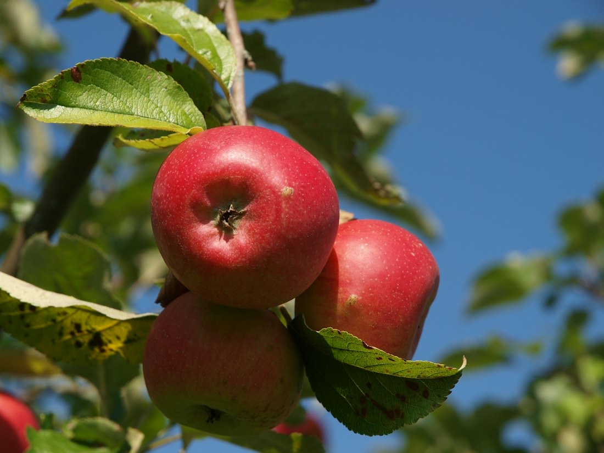
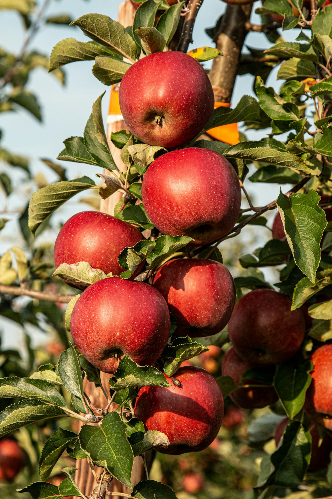
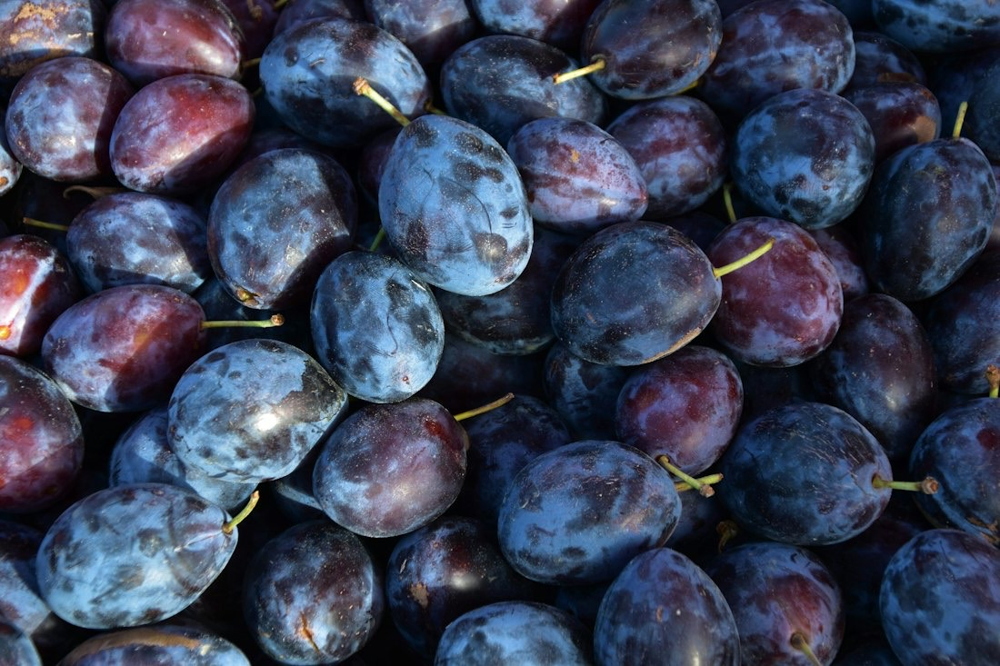
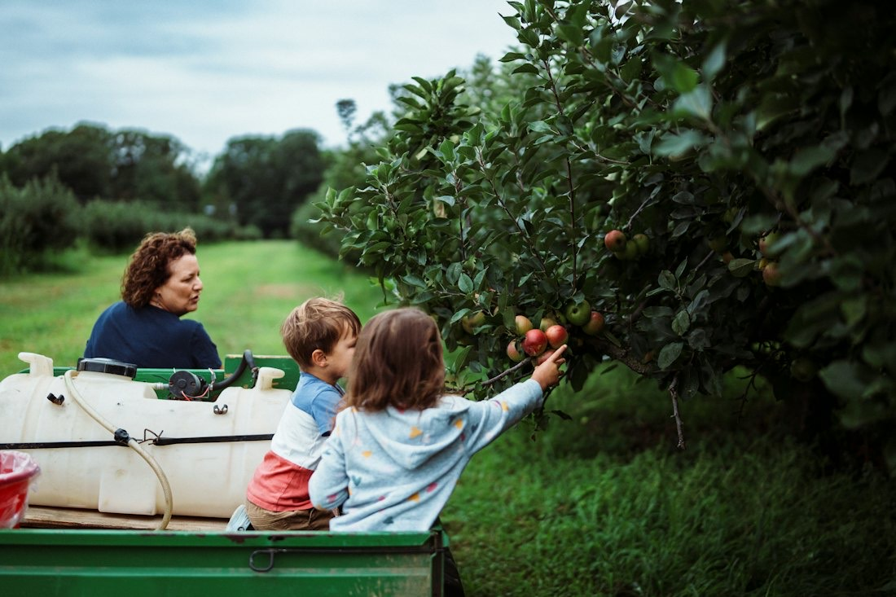
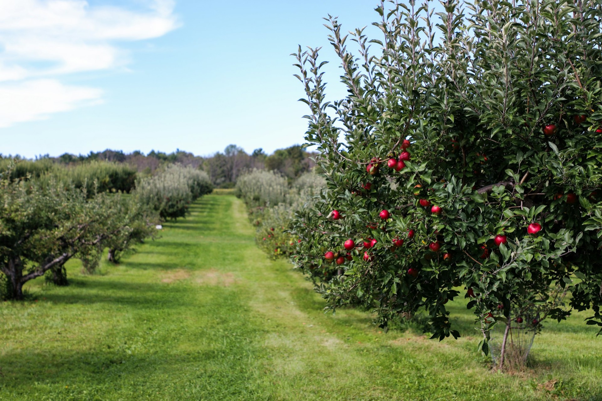

りんご
ひめかみ、トキ、華宝など。りんご狩りも。

観光果樹園・直売所 北海道亀田郡七飯町
さくらんぼ、プラム、ブルーベリー、もも、プルーン、りんごの収穫体験と直売。プルーン、りんご、りんごジュースの通信販売も行っています。
実をタップして、摘んでみてください
ひめかみ
直売所では、ひめかみ、トキなどのりんごを販売しています。
かごの中 0 個
りんごの木の3Dイメージです。当日の熟し具合や作業状況により、在庫がない場合があります
七飯町にあり、横津岳のふもとに位置しているため、寒暖の差が大きく、果物がおいしく育ちます。
ただいま直売所では、りんご（ひめかみ、トキなど）、プルーン、野菜などを販売しています。当日の熟し具合や作業状況により、在庫がない場合があります。

ひめかみ、トキ、華宝など。りんご狩りも。

プルーン狩りと、直売。

さくらんぼからりんごまで、季節ごとの果物狩り。

…
| 直売所 | 9:00〜16:00（12:00〜13:00は昼休み） |
|---|---|
| 定休日 | 月曜日（祝日の場合は火曜日） |
通信販売・収穫体験のお問い合わせは、お電話・メールで。